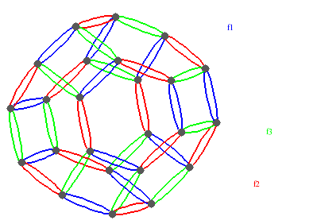
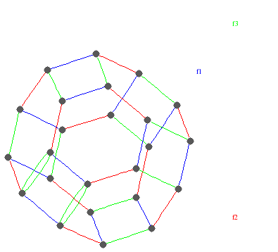

|
|||
|---|---|---|---|
| The
homology of a group G can also be defined as the homology of an orbit
space
X/G where X is any contractible space admitting a fixed-point
free action of G. Viewed in this way the homology of certain groups is
easily calculated. For example, the free abelian group Z2 of
rank two acts freely on the Euclidean plane R2, and the orbit space R2/Z2 is the
torus. We thus see that H1(Z2,Z) = Z2,
H2(Z2,Z) = Z and Hn(Z2,Z) =
0 for n>2. When G acts freely and cellularly on a contractible CW-space X then the cellular chain complex ... → Hn(Xn,Xn-1)
→ Hn-1(Xn-1,Xn-2) → ... → H1(X1,X0)
→ H0(X0)
is a free ZG-resolution of Z. (The chain group Hn(Xn,Xn-1) is just the free abelian group on the n-dimensional cells in X. It inherits the structure of a ZG-module from the action of G on X.) Not all free ZG-resolutions arise in this way. However, the algorithms in HAP are based on the topological view of group cohomology, and most resolutions in HAP do arise from a space X. The orbit space X/G is a classifying space for the group G, and its 2-skeleton corresponds to a group presentation for G. The presentation's generators correspond to 1-cells of X, and the relations correspond to 2-cells. The presentation can be accessed in HAP. For example, the following commands yield the presentation <x,y : x2=1, y2=1, z2=1, (xy)3=1, (yz)3=1, (xz)2=1> for the symmetric group S4. They also show that, for G=S4, the CW-space X/G has precisely 97 cells in dimension 20. |
|||
| gap>
R:=ResolutionFiniteGroup(SymmetricGroup(4), 20);; gap> P:=PresentationOfResolution(R); [ <free group on the generators [ f1, f2, f3 ]>, [ f1^2, f2^2, f3^2, f3*f1*f3*f1, f1*f2*f1*f2*f1*f2, f2*f3*f2*f3*f2*f3 ] ] gap> Dimension(R)(20); 97 |
|||
| The
function ResolutionFiniteGroup(G,n)
actually returns an object R with several components, one of which is a
function Dimension(R)
giving the ZG-rank
of the nth module in the resolution arising from a certain CW-space X. (It is interesting to note that this example calculation disproves a conjecture made in [M. Salvetti, "Cohomology of Coxeter groups", Topology and its Applications 118 (2002), 199-208] about classifying spaces Y of n-generator Coxeter groups W for which the 2-skeleton of Y corresponds to the standard Coxeter presentation of W. Salvetti conjectured that Y must have at least (n+k-1)!/(n-1)!k! cells in dimension k. According to this conjecture, such a classifying space Y for the 3-generator Coxeter group W=S4 would have at least 22!/20!2!=231 cells in dimension 20. However, the above calculation produces a space Y with the required 2-skeleton and just 97 cells in dimension 20.) The 1-skeleton of the space X constructed above for G=S4 can be viewed as a .gif file by using the following additional commands. |
|||
| gap>
G:=P.freeGroup/P.relators;; gap> CayleyGraphDisplay(G,GeneratorsOfGroup(G));; 
|
|||
| The
2-cells of the space X are polygonal disks with two, four and
six sides. The attaching
map of say the 10th 3-cell can be pictured as follows. |
|||
| gap>
IdentityAmongRelatorsDisplay(R,10); 
|
|||
| The
number of free ZG-generators is not the only measure of complexity
for a resolution R. What is not seen from the above commands on S4
is
that the last of the 97 generators in dimension 20 has an extremely
large
number of 19-dimensional cells in its boundary. This can be seen using R!.boundary(n,j)
which is a function giving the boundary of the j-th
n-dimensional generator. The 97-th generator has a boundary of length
7303 in the 19-dimensional module of the resolution considered as a
Z-module. This will cause problems for the construction of subsequent
terms of the resolution. There is the option of trying to simplify the resolution R during the process of its construction. The idea is to find simple homotopy equivalences that reduce the space X to one involving "smaller" cells. The option is invoked by setting a third variable equal to "true", as in the following. More work needs to be done on the simple homotopy simplification procedure! The following commands compute three resolutions for the dihedral group G=D16 of order 32. The first is computed without simplifications and the second with simplifications. For comparison, the third is a free Z2G-resolution of Z2 computed using standard linear algebra procedures over the field of two elements (and does not correspond to a CW-space X). The sum of the lengths of the boundaries of the 8-dimensional generators is 2813 without simplifications, 186 with simplifications and 2828 in the mod 2 case. |
|||
| gap>
G:=DihedralGroup(32);; gap> R:=ResolutionFiniteGroup(G,8);; gap> BoundaryLengthSum:=Sum(List([1..Dimension(R)(8)],x->Length(BoundaryMap(R)(8,x)))); 2813 gap> Rsimplified:=ResolutionFiniteGroup(G,8,true);; gap> BoundaryLengthSum:= Sum(List([1..Dimension(Rsimplified)(8)],x->Length(BoundaryMap(R)(8,x)))); 186 gap> Rmod2:=ResolutionPrimePowerGroup(G,8);; gap> BoundaryLengthSum:=Sum(List([1..Dimension(Rmod2)(8)],x-> Length(BoundaryMap(R)(8,x)))); 2828 |
|||
| The
vertices of the contractible G-space X correspond to the elements of G,
and the
1-skeleton
can be viewed as the Cayley graph of G with respect to the generators
in the associated presentation. Since the number of edges in the Cayley
graph
depends heavily on the generating set, the ZG-rank of the
1-dimensional module in R is very much influenced by the choice of
generators in "gens". The 2-skeleton of X is obtained by choosing a maximal tree in the 1-skeleton, and then attaching 2-cells for some of those 1-cells not in the tree. The choice of maximal tree obviously depends on "gens", but it is even influenced by the ordering of the elements in "gens". Consequently, when constructing resolutions in HAP one should experiment with various generating sets for the group in question. To illustrate this point, consider the following timings for the symmetric group S3 . The first command computes 100 terms of a resolution in less time than it takes the second command to compute 29 terms. The third command shows that the order of the generating set can be important. |
|||
| gap>
R:=ResolutionFiniteGroup([(1,2,3),(2,3)],100);;time; 31213 gap> R:=ResolutionFiniteGroup([(1,2,3),(1,2)],29);;time; 47250 gap> R:=ResolutionFiniteGroup([(2,3),(1,2,3)],100);;time; 49192 |
|||
| The
algorithm underlying ResolutionOfFiniteGroup()
is described
in [G. Ellis, "Computing group resolutions", J. Symbolic Computation,
28
(2004), 1077-1118]. It applies to a generating set for an arbitrary
finite group G. More work needs to be done on how a particular choice
of generators influences the algorithm's performance. Subsequent pages of this manual show how to incorporate some of the group theoretic structure of G into the computation of resolutions. We first mention some applications of cohomology. |
|||
|